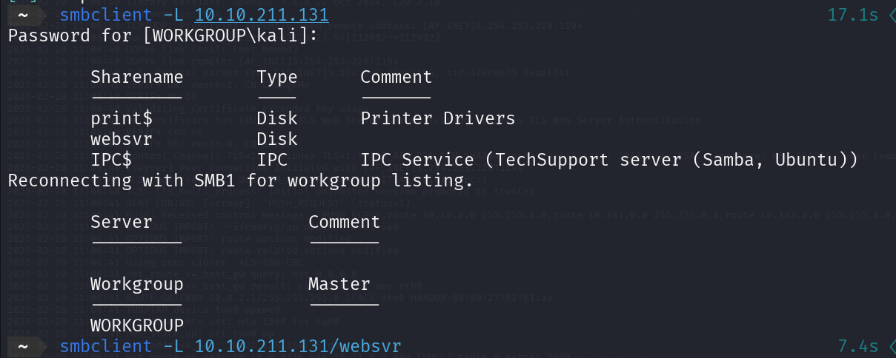
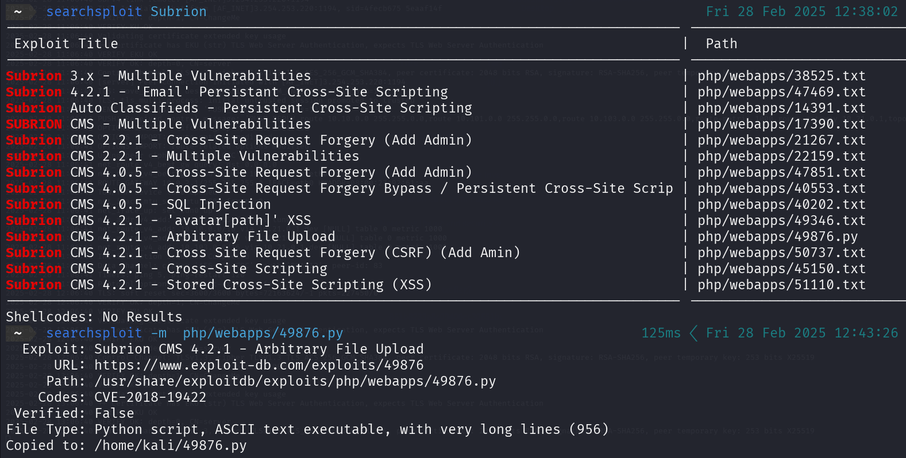
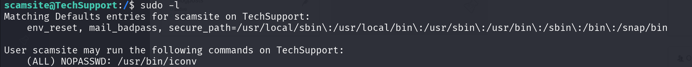

Guía Paso a Paso: Explotación de Techsupp0rt1
Esta máquina se me hizo algo complicada a la hora de explotarla.
Paso 1: Exploración y escaneo de puertos
Realicé un escaneo de puertos utilizando Nmap para identificar los servicios activos en la máquina de destino.

La máquina está corriendo Ubuntu y tiene el nombre de host "TECHSUPPORT". También se observó que la autenticación SMB está configurada para usar la cuenta "guest" con nivel de acceso "user".
Paso 2: Análisis del servicio web
Tras identificar que el puerto 80 estaba abierto, utilicé Gobuster para realizar un escaneo de directorios en el servidor web.

La redirección a /wordpress sugiere que podría haber una instalación de WordPress.

Paso 3: Análisis de SMB
Investigación del servicio SMB debido a los puertos 139 y 445 abiertos.
Paso 4: Acceso a archivos SMB
Exploré el contenido del recurso compartido websvr en el servidor de destino.
Descargué el archivo enter.txt para su análisis.
Paso 5: Descifrado de credenciales y análisis
Analicé el archivo enter.txt y encontré una credencial para Subrion. Decodifiqué la contraseña utilizando base58, base32 y base64.
Subrion es un CMS basado en PHP y MySQL.

Paso 6: Investigación de vulnerabilidades en Subrion
Usé Searchsploit para encontrar vulnerabilidades en Subrion CMS.
Encontré un exploit de carga arbitraria de archivos.
Paso 7: Ejecución del exploit con Python
Utilicé el script 49876.py para explotar la vulnerabilidad y obtener acceso a la máquina.

Accedimos a la shell de la máquina víctima.
Paso 8: Acceso al archivo wp-config.php
Como la máquina ejecuta WordPress, revisé el archivo wp-config.php en busca de credenciales sensibles.

Se identificó información interesante dentro del archivo.

Paso 9: SSH y Escalada de privilegios usando iconv
Probé acceder por SSH con las credenciales encontradas.
Ejecuté sudo -l para ver permisos y utilicé iconv para escalar privilegios.

Obtuve las flags y completé la explotación de la máquina.
Conclusión
Techsupp0rt1 fue una máquina desafiante que requirió combinar múltiples técnicas: SMB, análisis de credenciales, explotación de vulnerabilidades en CMS y escalada de privilegios.